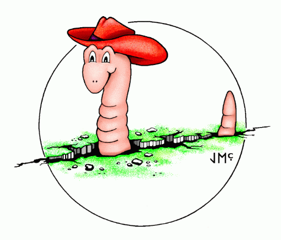

Earthworm Documentation V7.9
Table of Contents
October 26, 2016
Index
- History
- Design Goals
- System
Architecture
- How to get the Software
Distribution and copy of the Web Documentation:
- Communicating with other
Earthworm Users
Section 2: User Guide
- Installation and
Configuration
- Module Description and Configuration
- Starting and Stopping Earthworm
- Tuning the Earthworm Picking, Assocation, and Location
- Migration Notes
New modules and fixes to existing modules are encouraged. Please
read the Coding Standards
and Software Procedures before you do anything. If you have a new
module you'd like included, or a fix to contribute, please send email
to the Earthworm
List.
- Coding Standards and Software Procedures
- How to Compile
- Increasing the
number of Shared Memory Rings under Solaris
- Earthworm Library Functions
- Transport Layer
(The guts of EARTHWORM communications within one computer
system)
- Formats
- How Microsoft Windows NT
4.0 handles internal Time
- How to disable NT disk
sharing
- How to configure
multiple ethernet adapters under NT
- NT USER32.dll
initialization errors
- LOCATION
CODE POLICY
- LOCATION CODE
MESSAGE CHANGES
- Wave Server Protocol Doc
Section 4. Release Notes
Section 5. Community and References
- References, Reports & Links to Articles on
Earthworm (updated
Feb. 2007)
- INGV report: Tuning an Earthworm Phase Picker: Some
Considerations on the Pick_ew Parameters, by Mele et al. 2010 also found here in the release
- ORFEUS
Newsletter Vol5 No1, Earle et al., March, 2003
- ORFEUS
Newsletter Vol5 No1, Childs and Komec, March, 2003
- Earthworm
Article IRIS News Letter Fall, 1995
- Kandilli-Observatory-Earthworm-Performance-Nov-2005
(PDF download)
- Earthworm workshop
INGV/ORFEUS/ISTI, Rome, Italy October 2007 (ppts)
- Some Seismic,
Geomagnetic, and Volcanic Observatories using
Earthworm (compiled Feb. 2007)*
- Alaska Volcano
Observatory
(AVO)
- Alaska Tsunami Warning
Center (ATWC)
- British
Geological Survey (BGS)
- California Integrated Seismic
Network (CI/NC/BK/NP)
- Cascade Volcano
Observatory (CVO)
- CSIRO
Exploration and Mining, Australia
- Dominican
Republic
- Ecuador (IGEPN)
- El Salvador
(SNET)
- Hawaii Volcano Observatory
(HVO)
- Hellenic Seismological
Broadband Network (HL), Athens Greece
- Idaho
National Laboratory (INL)
- Infrasound Laboratory
University of Hawaii (ISLA)
- Italian Earthquake Data Center (Centro Nazionale Terremoti)
Instituto Nazionale di Geofisica e Vulcanologia (INGV), Italy
- Institut
Geologic de Catalunya, Catalonia Spain
- Kandilli
Observatory, Turkey
- Lamont-Doherty
Cooperative Seismographic Network (LD)
- Monserrat Volcano Observatory
- Montana
Regional Seismographic Network (MT)
- Mount Erebus Volcano
Observatory
- New England
Seismic Network (NESN)
- New Mexico
Tech Seismic Network
- National Earthquake
Information Center (NEIC)
- New
Mexico Tech Earthworm System
- New Madrid
Seismic
Network, CERI
- Nicaragua
Seismic Network Survey (INETER)
- National Institute
for Occupational Safety and Health (NIOSH) Mining Division
- Norwegian
National Seismic Network (NNSN)
- Volcan
Baru (OSOP)
- Observatorio
Vulcanologico y Sismologico de Costa Rica (OVISCORI)
- Pacific
Northwest Seismic Network (PTWC)
- Pacific Tsunami
Warning
Center
- Patras
Seismological Laboratory (Greece)
- Puerto
Rico Seismic Network
- Servicio Seismologico
Nacional (Mexico)
- University of Colima (UC)
- University of Utah
Seismographic Stations (UU)
- University
of Panama
- Uzbekistan Digital
Seismic Network
- USGS Geomagnetic program
- Venezuela Seismic
Network
(FUNVISIS)
- Autonomous University of
Santo Domingo (UASD), Dominican Republic (DR)
-
Center of Volcanology and Geological Risks Assessment
-
French Riviera Observatory, OCA - Geoazur Labs, France
* These are only ones that had links,
there are many more, and thus is not all inclusive!
Developers:
EARTHWORM development team was originally headed by Alex
Bittenbinder
and coordinated by Barbara
Bogaert; both with the U.S.
Geological
Survey. Funding for this release was provided by the USGS and
many other contributors.
Principal EARTHWORM
development is now provided by members of the the Earthworm Community.
In 2005, ISTI.com and
CERI (University of Memphis)
have taken on lead roles in software development and user support of
Earthworm. Please join the Earthworm community by coming an active
developer (join ewdev-subscribe @ isti . com) mailing list.
Send any bug reports or configuration problems to the earthw mailing
list.
This software is Open Architecture and more importantly Open Source and is freely
available to anyone. Distribute and use as your heart desires.
This software was originally written and funded by the United States Geological Survey.
Date last modified: April 24, 2015
last modified by Eric Thomas of ISTI.com